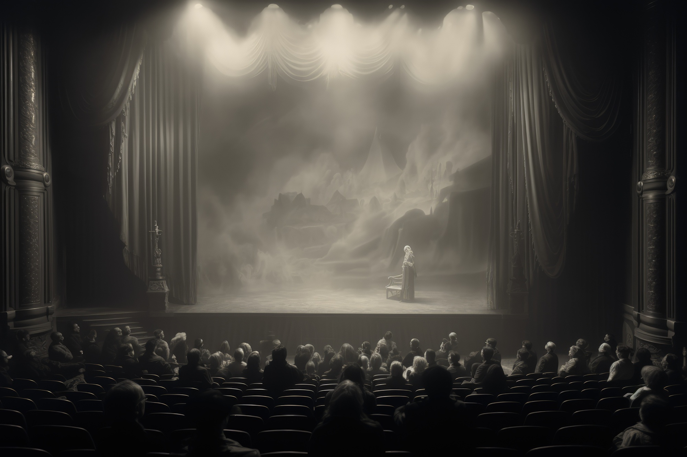
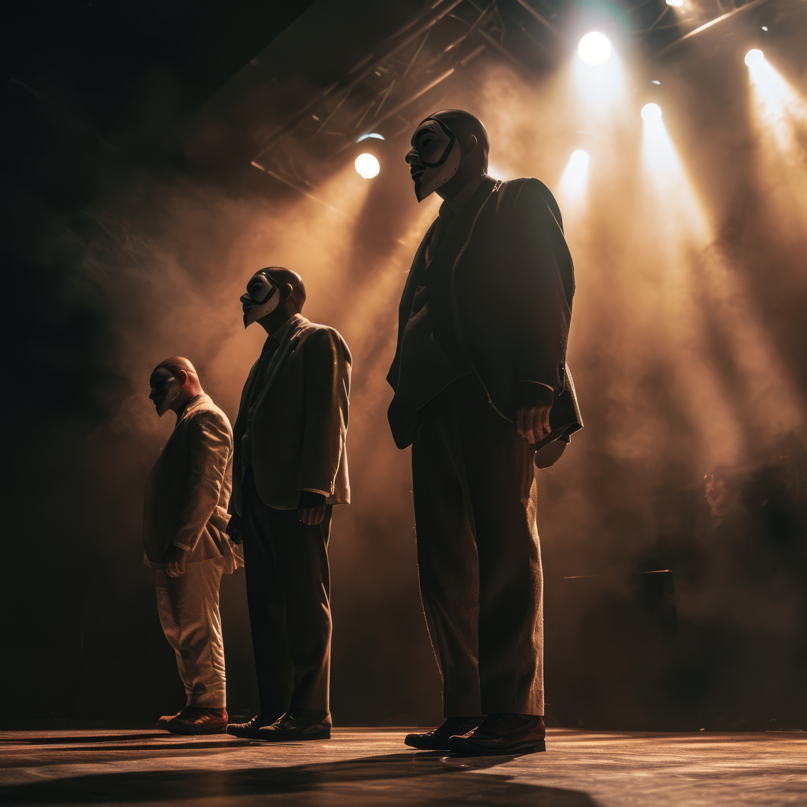

Classificação: 16+
Em Lágrimas no Crepúsculo , acompanhamos a intensa jornada de Ana, uma jovem que enfrenta a perda e a redenção em meio a uma crise familiar. Com diálogos profundos e cenas emocionantes, a peça explora o luto, a esperança e a complexidade das relações humanas, mergulhando o público em uma trama poderosa e comovente.
Classificação: Livre
O Circo de Chaplin é uma comédia leve e encantadora que homenageia o icônico humor de Charles Chaplin. O espetáculo apresenta uma série de esquetes cômicas com personagens pintados à moda dos anos 1920, oferecendo risos e diversão através de situações absurdas e mal-entendidos hilários que vão garantir a diversão de toda a família.

Classificação: 18+
Em "A Máscara do Medo" um grupo de estranhos se encontra em uma mansão isolada, onde segredos obscuros começam a emergir enquanto máscaras misteriosas revelam as verdadeiras intenções de cada um. A peça é um thriller psicológico repleto de reviravoltas e tensão, mantendo o público na ponta da cadeira até o último momento.
Prepare-se para uma noite de intensa emoção e entretenimento com essas três peças que exploram as mais profundas facetas da experiência humana!